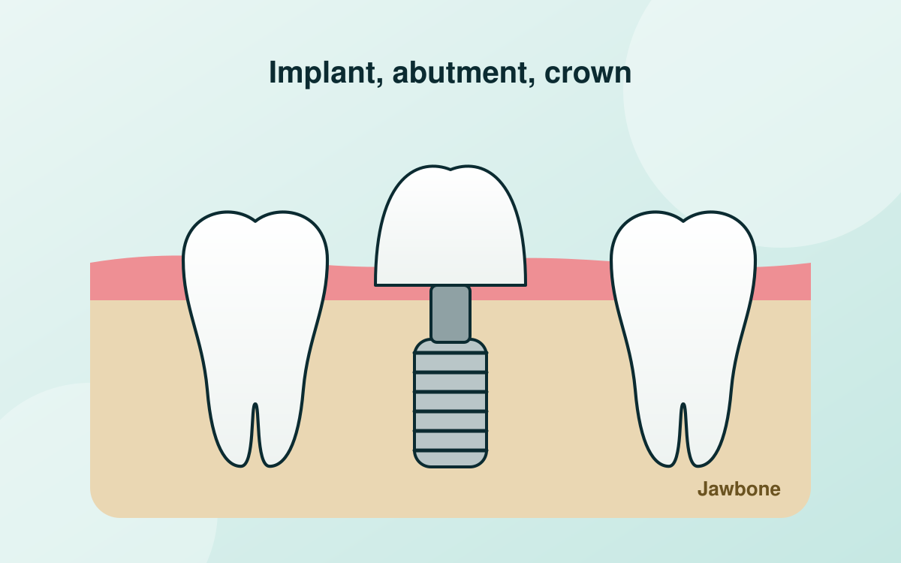
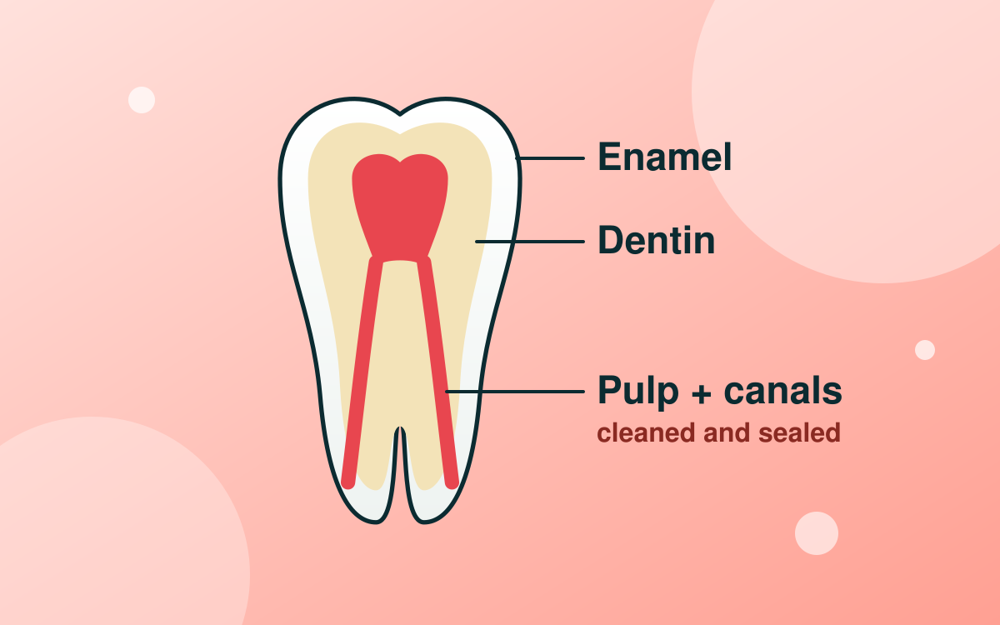

Gentle, precise dental care in Panna
Tooth Care Centre is led by Dr. Shewtank Singh (B.D.S., M.D.S.). From check-ups and root canals to implants and smile design, every step is explained before it starts.
- 5.0 on Google
- Mon to Sat, 10 am to 8 pm
- Agra Mohalla, Panna
What is bothering you?
Pick the closest match and we will point you to the right treatment.
Dental treatments in Panna
Six main areas of care, each with a page explaining who it helps and what to expect.
Root canal treatment
Save a painful or infected tooth instead of pulling it.
Dental implants
Fixed replacement for one or more missing teeth.
Smile designing and veneers
Whitening, veneers and contouring planned around your face.
Braces and clear aligners
Straighten crowded, gapped or misaligned teeth.
Children's dentistry
Gentle, fear-free care and prevention for children.
Gum treatment
Bleeding gums, bad breath and loose teeth.

Meet Dr. Shewtank Singh
Dental surgeon (B.D.S., M.D.S.) and founder of Tooth Care Centre, near Benisagar Talab in Panna.
We believe a dental visit should be comfortable and predictable. You will always be told what we found, what the options are and what each will cost before treatment begins.
- Specialist qualifiedMaster of Dental Surgery (M.D.S.)
- Modern diagnosticsDigital X-rays and 3D imaging for planning
- Strict sterilisationInstruments are sterilised and cleaned between patients
Your first visit
No surprises. This is what happens from the moment you book.
Book a time
Use the online form or call us. Tell us what is bothering you and pick a slot.
Examination and plan
We examine your teeth, take X-rays if needed and explain the options and costs in plain words.
Treatment at your pace
Treatment begins only when you are comfortable with the plan. Regular reviews keep you on track.
See how a smile can change
Smile designing starts with a preview so you can agree the result before treatment. Drag the slider to compare.
Explore smile designingThis is an illustration of the kind of change possible, not a patient photograph. Results vary.
What patients say
Read all reviews on our Google profile.
Excellent diagnostic facilities with the best care. Dr. Shewtank provides the most precise and painless treatments in the city.
I was very nervous about my root canal. Everything was explained step by step, and I did not feel any pain during the treatment.
My mother needed an implant. The doctor took time to explain the options and the cost before starting, which we really appreciated.
Brought my daughter for her first dental visit. She came out smiling and even asked when we could come again.
Clean clinic, no long waiting, and clear advice on how to look after my gums. My bleeding stopped within two weeks.
Dental tips from the clinic
Short, practical guides on looking after your teeth and gums.

How to brush your teeth properly: a two-minute routine that works
Most people brush too hard and too fast. Here is the angle, time and toothpaste amount that actually protect your teeth and gums.
Read article
Are dental implants painful? What patients can expect
Fear of pain stops many people from replacing missing teeth. Here is what the procedure and recovery actually feel like.
Read article
Five root canal myths, answered
Root canals have a scary reputation they no longer deserve. We answer the five myths we hear most often.
Read articleCommon questions
Where is Tooth Care Centre in Panna?
We are in Agra Mohalla, in front of Benisagar Talab, Panna, Madhya Pradesh 488001. Use the map on our contact page for directions.
What are your clinic timings?
Monday to Saturday, 10:00 am to 8:00 pm. Sunday is by appointment only.
Do I need an appointment?
Booking ahead avoids waiting, and it is required on Sundays. You can request a slot online or call 075099 99033. For sudden pain, call and we will do our best to see you the same day.
Who will treat me?
Dr. Shewtank Singh (B.D.S., M.D.S.) leads every treatment plan at the clinic.
Is a root canal painful?
The treatment is done under local anaesthesia, so it should feel like having a filling. The pain comes from the infected tooth, and the treatment is what relieves it.
How much will my treatment cost?
Cost depends on the treatment and the condition of your teeth. After your examination you will get a clear plan and estimate before we start anything.
Book your visit
Choose a time that suits you. We will call to confirm.